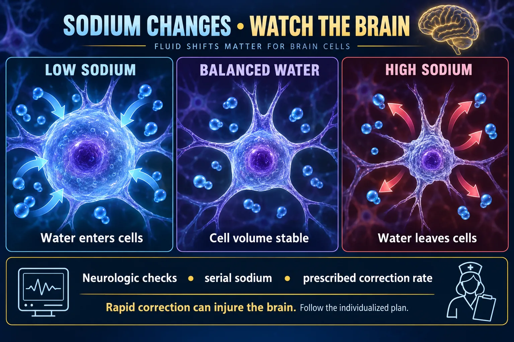

SIADH vs DI 💧
Part 1 — patho, signs and the core comparison
These two look like completely different diseases. They are the same switch, stuck in opposite positions. ADH has exactly one job — open water doors in the kidney's collecting duct. Too much ADH and you keep every drop: SIADH, soaked inside. Too little (or a kidney that ignores it) and you lose everything: diabetes insipidus, dry as a desert. Learn the switch and you never mix them up again.
THE SWITCH
STEP 1 · MECHANISMOne hormone, one receptor, one door. Master the door and both diseases fall out of it.

Concentrated urine with diluted plasma differs from loss of large dilute urine volumes.
🔍 Open full-size illustration📖 Read the illustration as text
SIADH involves inappropriate antidiuresis and low plasma sodium/osmolality. DI is deficient ADH release or an impaired renal response, causing large dilute urine losses. Sodium can remain normal if thirst and access to water compensate. The arrows show relative water movement, not measured flow rates.
🔬 MASTER DIAGRAM — aquaporin doors open vs locked
💧 Normal water-conservation loop
- Rising blood osmolality stimulates thirst and hypothalamic ADH signaling.
- Posterior pituitary releases ADH.
- Kidney V2 signaling inserts aquaporin-2 channels on the urine-facing membrane.
- Water moves from urine toward blood; urine becomes more concentrated.
Low effective circulating volume can also stimulate ADH. Central DI lacks adequate signal; nephrogenic DI has an impaired kidney response.
🔬 The normal loop that both diseases break
🖼️ Shown in the picture: Normal water-conservation loop ↑
🧬 The one sentence that unlocks the whole topic
ADH controls water, not sodium.
In SIADH the sodium is not being lost — it is being diluted by retained water. In DI the sodium is not being made — it is being concentrated because water left.
That is why SIADH is treated first with fluid restriction rather than with salt, and why DI is treated with water and ADH rather than with a diuretic.
🧠 Why the brain is the organ that suffers

Tonicity changes alter cell volume.
🔍 Open full-size illustration📖 Read the illustration as text
Hypotonic low-sodium states can move water into brain cells; hypertonic high-sodium states can move water out. Severity and timing matter, and cells adapt over time. Monitor neurologic status and serial sodium. Correct abnormalities at the prescribed rate to avoid neurologic injury.
SIADH — SOAKED INSIDE
STEP 2 · TOO MUCH ADHSyndrome of Inappropriate Antidiuretic Hormone — ADH keeps coming when the body is telling it to stop.
🩺 Different problems, different fluid plans
SIADH
- Treat the cause; prescribed fluid restriction may be appropriate.
- Severe symptomatic hyponatremia needs urgent monitored treatment, often hypertonic saline.
DI
- Replace losses according to volume status and the prescribed plan.
- Central DI often needs desmopressin. Nephrogenic DI requires cause-specific management.
Both
- Track sodium, neurologic status, I&O, weight and treatment response.
- Do not impose one universal fluid allowance or correction rate.
🚨 Pathophysiology
Too much ADH → the kidney reabsorbs water it should be excreting → water piles up in the blood and then in the cells.
- Blood becomes dilute — sodium and osmolality fall.
- Urine becomes scanty, dark and concentrated.
- Water follows the gradient into cells, including brain cells.
- Volume expands, so the body suppresses aldosterone and dumps a little extra sodium in the urine — which is why urine sodium is high, and why the hyponatremia keeps getting worse.
Classically the patient is euvolemic: they gain weight, but you usually see no peripheral edema, because the excess water goes into cells rather than the interstitium.
🧠 The three big S causes
Plus drugs: certain antidepressants and antipsychotics, carbamazepine, chemotherapy agents, opioids — and prolonged high-dose oxytocin or desmopressin. Pain, nausea, stress and surgery all raise ADH physiologically.
🔬 Where each disorder comes from
🔎 Match the cause to the mechanism
SIADH
- CNS or lung disease, some tumors and medicines can produce inappropriate antidiuresis.
Central DI
- Hypothalamic or pituitary injury can reduce ADH release.
Nephrogenic DI
- Renal resistance may relate to medicines such as lithium, high calcium, low potassium or inherited disorders.
🚨 Signs & symptoms — mostly neurological
The severity tracks with how low the sodium is and how fast it fell.
- Headache — an early sign, and easy to dismiss.
- Confusion, irritability, personality change — the family often notices first.
- Nausea, vomiting, anorexia.
- Muscle cramps and weakness.
- SEIZURES, then coma — the reason this is an emergency.
- Weight gain with decreased urine output; blood pressure normal to slightly raised.
NCLEX key words: headache, confusion, seizure. A falling sodium presents as a neuro problem long before it presents as anything else.
🧪 The lab picture
- Serum sodium LOW — below 135 mEq/L; symptomatic territory is usually well under 130.
- Serum osmolality LOW — below 275 mOsm/kg.
- Urine osmolality HIGH — inappropriately concentrated for how dilute the blood is.
- Urine specific gravity HIGH — 1.030+.
- Urine sodium HIGH — the body is dumping sodium because it thinks it is volume-overloaded.
Every number quoted on this page is a typical adult reference range — ranges vary by laboratory, so read the range printed beside the result.
✅ Core treatment — first moves
- FLUID RESTRICTION is the primary treatment. No IV maintenance fluids, and limited oral intake per the ordered amount.
- Seizure precautions — padded rails, suction and oxygen at the bedside, bed low, someone in earshot.
- Strict intake and output and DAILY weights — same scale, same time, same clothing. Not weekly.
- Frequent neuro checks — level of consciousness is the earliest, most sensitive sign.
- Hypertonic 3% saline is reserved for severe, symptomatic hyponatremia (seizures, coma) and is given slowly on a pump in a monitored setting.
- Treat the cause — the tumor, the infection, the offending drug.
🚨 Correct the sodium SLOWLY
Raising a chronically low sodium too fast can cause osmotic demyelination syndrome — permanent, often devastating neurological injury.
Institutions set their own limits, but a commonly cited ceiling is a rise of no more than about 8 mEq/L in 24 hours for chronic hyponatremia. Follow your facility's protocol and the prescriber's order — the exact target varies.
Practically, this means hypertonic saline is always on a pump, with frequent sodium checks, and it is never a bolus you push.
DIABETES INSIPIDUS — DRY AS A DESERT
STEP 3 · TOO LITTLE ADHNot diabetes mellitus. Nothing to do with glucose — the word "diabetes" just means "passing through".
🏜️ Pathophysiology
Too little ADH — or a kidney that cannot respond to it — so the water doors never open and water pours straight out.
- Central (neurogenic) DI — the hypothalamus or posterior pituitary is damaged, so no ADH is made or delivered. Causes: head trauma, pituitary surgery, tumor, stroke, infection.
- Nephrogenic DI — ADH is present but the kidney ignores it. Causes: lithium, chronic kidney disease, hypercalcemia, hypokalemia.
Two other forms exist: dipsogenic (a broken thirst mechanism causing excessive drinking) and gestational (placental enzyme breaking down ADH, which resolves after delivery).
🚨 Signs & symptoms — a volume emergency
- Polyuria — huge volumes of pale, watery, dilute urine; often 4–20 L/day. Nocturia and new bedwetting in children.
- Polydipsia — relentless thirst, often specifically for ice-cold water.
- Dehydration — dry cracked mucous membranes, poor skin turgor with tenting, sunken eyes, weight loss.
- Tachycardia and hypotension, progressing to hypovolemic shock if intake cannot keep up.
- Constipation, fatigue, and late neurological change — irritability, lethargy, seizures, coma — from rising sodium.
The dangerous patient is the one who cannot drink — unconscious, intubated, sedated, an infant, or a confused older adult. Thirst is the only defense and they do not have it.
🧪 The lab picture — the exact mirror image
- Serum sodium HIGH — above 145 mEq/L.
- Serum osmolality HIGH — above 295 mOsm/kg.
- Urine osmolality LOW — inappropriately dilute for how concentrated the blood is.
- Urine specific gravity LOW — often below 1.005.
- Urine output that is enormous and does not fall when fluids are held.
Diagnosis: a water deprivation test — withhold fluids under close supervision and see whether the urine ever concentrates. Then give desmopressin: central DI responds; nephrogenic DI does not.
✅ Core treatment — first moves
- Replace the water. Encourage oral fluids if the patient can drink safely; hypotonic IV fluids per order if they cannot.
- Desmopressin (DDAVP) — a synthetic ADH analog — replaces the missing hormone in central DI. Available oral, intranasal and injectable.
- Nephrogenic DI does not respond to desmopressin. Management targets the cause: review lithium and other culprit drugs with the prescriber, correct calcium and potassium, and use a low-sodium diet with a thiazide diuretic — which paradoxically reduces urine output here.
- Strict intake and output, hourly if unstable. Urine specific gravity with each void. Daily weights.
- Safety: keep water within reach; never restrict fluids in DI unless a test is specifically ordered and supervised.
⚠️ Do not confuse it with diabetes mellitus
| Diabetes INSIPIDUS | Diabetes MELLITUS |
|---|---|
| Problem with ADH | Problem with insulin |
| Urine is tasteless / dilute ("insipid") | Urine is sweet with glucose ("mellitus" = honey) |
| Specific gravity LOW (<1.005) | Specific gravity often HIGH (glucose adds weight) |
| Blood glucose normal | Blood glucose high |
| Both have polyuria and polydipsia | Both have polyuria and polydipsia — plus polyphagia |
TELL THEM APART
STEP 4 · SIDE BY SIDEIf you can hold this one table and one picture, you can answer any question on this topic.
🔬 The two patients
🖼️ Shown in the picture: SIADH versus DI: follow the water ↑
🧪 The four numbers, on scales
🧪 Blood and urine tell different parts of the story
SIADH
- Low serum sodium and low serum osmolality.
- Urine is inappropriately concentrated for the dilute plasma; clinical volume status is often euvolemic.
DI
- Large dilute urine volume.
- Serum sodium/osmolality may rise when water intake cannot replace losses; sodium can remain normal.
📋 The master comparison table
| 🌊 SIADH — too MUCH ADH | 🏜️ DI — too LITTLE ADH |
|---|---|
| Water RETAINED | Water LOST |
| Urine output DOWN, small and dark | Urine output UP, liters of pale water |
| Urine specific gravity HIGH 1.030+ | Urine specific gravity LOW <1.005 |
| Urine osmolality HIGH (concentrated) | Urine osmolality LOW (dilute) |
| Serum sodium LOW <135 — dilutional | Serum sodium HIGH >145 |
| Serum osmolality LOW <275 | Serum osmolality HIGH >295 |
| Weight GAIN; usually no edema | Weight LOSS; poor turgor, sunken eyes |
| BP normal to slightly up; volume expanded | BP down, HR up; volume depleted |
| Neuro: headache → confusion → seizure | Neuro: thirst → irritability → lethargy → coma |
| RESTRICT fluids; seizure precautions; hypertonic saline only if severe & symptomatic | REPLACE fluids; desmopressin for central DI; thiazide + low sodium for nephrogenic |
| Causes: small cell lung cancer, brain trauma, CNS infection, drugs | Causes: pituitary/stalk damage, surgery, lithium, high Ca²⁺, low K⁺ |
💊 Treatment, side by side
🖼️ Shown in the picture: Different problems, different fluid plans ↑
⭐ The 10-second bedside sort
🩺 What you monitor either way
- Daily weight — same scale, same time, same clothing. 1 kg = 1 L of fluid.
- Strict intake and output, hourly if the patient is unstable.
- Urine specific gravity — the cheapest, fastest bedside indicator of which direction things are going.
- Serum sodium and the trend, not just the single value.
- Neurological status — level of consciousness is the earliest change in both.
- Vital signs, especially orthostatic blood pressure in DI.
🚨 Both can appear after the same surgery
Neurosurgery and pituitary surgery can produce either disorder — sometimes both in sequence, in a classic triphasic pattern: DI first, then a period of SIADH, then DI again.
That is exactly why post-neurosurgical patients get hourly urine output, specific gravity and frequent sodium checks. You are not just watching for one thing — you are watching which way the switch flips.
🆕 Newer guidance — side notes (your textbook answer stays the exam answer)
- SIADH is usually clinically euvolemic: weight gain without obvious edema, because the kidney sheds extra sodium. Visible edema or marked dehydration points to a different cause of the low sodium.
- The defining urine finding is urine that is too concentrated for the low serum osmolality (urine osmolality above about 100 mOsm/kg). A specific gravity above 1.030 is common in exam questions but is not required.
- For severe symptomatic hyponatremia, current guidelines give 3% saline as measured, time-limited boluses (for example 100–150 mL over 10–20 minutes, repeated per protocol) or as a controlled infusion — always on the facility protocol, never an improvised push, with close sodium checks and a daily correction limit.
- In DI the sodium can stay normal when thirst and free access to water keep up; hypernatremia appears when the patient cannot drink enough.
From Codex’s 7 Oct review, sources checked that day. For tests and NCLEX-style questions, answer the way your textbook teaches.
QUICK RECALL
SAY IT OUT LOUD⚠️ Six traps this page exists to prevent
- Desmopressin is not a vasopressor. It is a synthetic ADH analog that conserves water. The thing you watch is the sodium and fluid status.
- SIADH sodium is low from dilution, not from loss. The first treatment is restricting water, not pouring in salt.
- Do not give maintenance IV fluids in SIADH unless specifically ordered — normal saline can make the hyponatremia worse.
- Weigh daily, not weekly. A weekly weight is a wrong answer on both diseases.
- Never restrict fluids in DI outside a supervised, ordered water deprivation test.
- Correct sodium slowly. Fast correction of chronic hyponatremia risks osmotic demyelination.
🔗 Where this goes next
- NG-283 · SIADH vs DI (2) — part 2 of this pair: deeper nursing care, treatment detail and exam-style practice.
- NG-281 · Pituitary Disorders — the surgery that causes both of these.
- NG-279 · Hall of Fame II — ADH and oxytocin in their normal roles.
- NG-278 · Hall of Fame I — the hypothalamic–pituitary axis from the top.